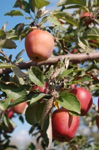

Welcome

Welcome to the home page of our family farm,
Sunny Acres, where there's always something
happening. With the coming of fall, we're
gearing up for our big AutumnFest and Farm
Show. If you haven't visited our famous Corn
Maze, be sure to do so before it gets torn
down on November 5. This year's maze is
bigger and better than ever.
Farms can be educational and Sunny Acres is
no exception. Schools and home-schooling
parents, take an afternoon with us at our
Petting Barn. We have over 100 friendly farm
animals in a clean environment. Kids can
bottle feed the baby goats, lambs, and
calves while they learn about nature and the
farming life. Please call ahead for large
school groups.
When the sun goes down this time of year,
we're all looking for a good fright. Sunny
Acres provides that too with another year of
the Haunted Maze. Please plan on joining us
during weekends in October or on Halloween
for our big Halloween Festival.
Of course, Sunny Acres is above all, a farm.
Our Farm Shop is always open with reasonable
prices and great produce. Save even more
money by picking your own fruits and
vegetables from our orchards and gardens.
We all hope to see you soon, down on the
farm.
Hour
- Farm Shop: 9 am - 5 pm Mon - Fri; 9 am - 3 pm Sat
- The Corn Maze: 11 am - 9 pm Sat; 11 am - 5 pm Sun
- The Haunted Maze: 5 pm - 9 pm Fri & Sat
- Petting Barn: 9 am - 4 pm (Mon - Fri); 11 am - 3pm (Sat & Sun)
Direction
- From Council Bluffs, proceed east on I-80
- Take Exit 38 North to the Drake Frontage Road
- Turn right on Highway G
- Proceed east for 2.5 miles
- Sunny Acres is on your left; watch for the green sign